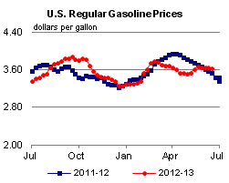
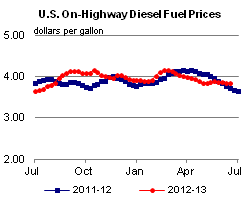
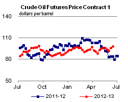
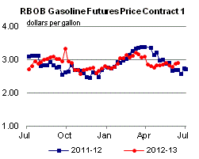
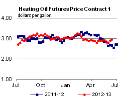
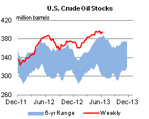
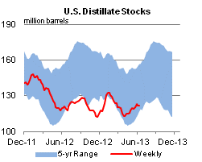
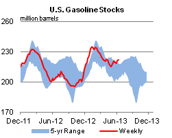
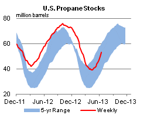

Released: June 19, 2013
Next Release: June 26, 2013
EIA estimates global technically recoverable shale oil resources of 345 billion barrels
In the recently released report on Technically Recoverable Shale Oil and Shale Gas Resources, covering 42 countries, including the United States, EIA estimates that there are 345 billion barrels of technically recoverable shale oil resources in the covered formations (Figure 1). The assessed resources represent 10 percent of the world's technically recoverable crude oil resources, which are resources that can be produced using current technology without reference to economic profitability.
{kind=link}
More than half of the identified shale oil resources outside the United States are concentrated in four countries - Russia, China, Argentina, and Libya (Table 1). The United States ranks second in the world, following Russia, for shale oil resources.
Shale oil resource estimates are highly uncertain and remain so until the resources are extensively tested with production wells. The methodology used in this report for estimating the shale resources outside the United States is based on the geology and resource recovery rates of similar shale formations in the United States that have produced shale oil from thousands of wells.
When considering the market implications of abundant shale resources, it is important to distinguish between a technically recoverable resource, which is the focus of this report, and an economically recoverable resource. Technically recoverable resources are those that could be produced with current technology, regardless of oil and natural gas prices and production costs. Economically recoverable resources are those that can be profitably produced given current market conditions.
The economic recoverability of oil and gas resources depends on three factors: costs of drilling and completing wells; amount of oil or natural gas produced from an average well over its lifetime; and prices received for recovered oil and gas. Recent experience with shale gas in the United States and other countries suggests that economic recoverability can be significantly influenced by above-the-ground factors as well as by geology. Key positive above-the-ground advantages in the United States and Canada that may not apply in other locations include: private ownership of subsurface rights that provide a strong incentive for development; availability of many independent operators and supporting contractors with critical expertise and suitable drilling rigs; preexisting gathering and pipeline infrastructure; and the availability of water resources for use in hydraulic fracturing.
Because shale resources have proven to be quickly producible in large volumes at a relatively low cost, they have revolutionized U.S. oil production, and in 2012 provided 29 percent of total U.S. crude oil production. However, given the variation across the world's shale formations in both geology and above-the-ground conditions, the extent to which technically recoverable shale resources outside the United States will prove to be economically recoverable is unclear.
The impact of shale resources outside the United States will depend on production costs in the various formations, and how they compare to the market value of produced volumes. Production costs depend on drilling costs, volumes produced per well, and the fiscal regime surrounding resource extraction. Because oil markets are much more globally integrated than natural gas markets, the value of shale oil production is likely to show considerably less variation across global regions than would be true for shale gas production. Even modest differences in costs, well productivity and/or fiscal regimes can make the difference between an economically attractive resource and one that cannot be profitably recovered.
Several countries have already begun to evaluate and test the production potential of their shale formations, with an initial focus on shale gas. In Poland, for example, prospective shale acreage has been leased and 43 test wells have been drilled as of April 2013. Argentina, Australia, China, England, Mexico, Russia, Saudi Arabia, and Turkey have begun exploration or expressed interest in developing their shale formations. As noted previously, the success of these efforts, and future oil-directed shale resource development, will depend on conditions both above- and below-ground, and the key positive above-the-ground advantages enjoyed in the United States and Canada may not apply in all of these locations.
Gasoline and diesel fuel prices both decrease
The U.S. average retail price of regular gasoline decreased three cents to $3.63 per gallon as of June 17, 2013, up nine cents from last year at this time. The Midwest price decreased 13 cents to $3.74 per gallon, and the Rocky Mountain price is lower by three cents at $3.69 per gallon. Prices on the East and West Coasts both increased by a penny, to $3.50 and $3.89 per gallon, respectively. Rounding out the regions, the Gulf Coast price is $3.38 per gallon, up four cents from last week.
The national average diesel fuel price decreased one cent to $3.84 per gallon, 11 cents higher than last year at this time. The East Coast price fell less than a penny to remain at $3.84 per gallon. The Gulf Coast price is $3.74 per gallon, one cent lower than last week. Midwest and Rocky Mountain prices both fell two cents, to $3.86 and $3.85 per gallon, respectively. Rounding out the regions, the West Coast price is up one cent to $3.95 per gallon.
Propane inventories gain
Text from the previous editions of This Week In Petroleum is accessible through a link at the top right-hand corner of this page.
|  |  | ||||||
| Retail Data | Change From Last | Retail Data | Change From Last | ||||
| 06/17/13 | Week | Year | 06/17/13 | Week | Year | ||
| Gasoline | 3.626 | Diesel Fuel | 3.841 | ||||
|  |  | ||||||||||||||||||||||||||
|
 | ||||||||||||||||||||||||||
| *Note: Crude Oil Price in Dollars per Barrel. | |||||||||||||||||||||||||||
|  |  | ||||||
|  |  | ||||||
| Stocks Data | Change From Last | Stocks Data | Change From Last | ||||
| 06/14/13 | Week | Year | 06/14/13 | Week | Year | ||
| Crude Oil | 394.1 | Distillate | 121.6 | ||||
| Gasoline | 221.7 | Propane | 53.120 | ||||